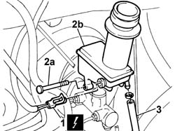
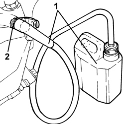
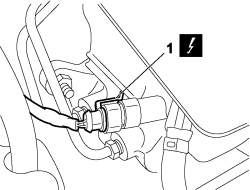
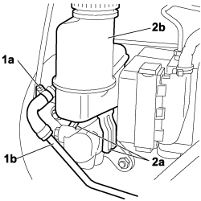

3330C30 brake fluid reservoir - r + r and wash inside
- Path
- Procedures > 33 BRAKES > 3330 HYDRAULIC BRAKE SYSTEM > 3330C BRAKE PUMP, RESERVOIR AND LOAD PROPORTIONING VALVE > 3330C30 brake fluid reservoir - r + r and wash inside
- Kind
- repair procedure (removal / refitting; the operation number is the code)
- Applies to
- all engines; all production periods
- Interactive page
- https://sloeber94.github.io/elrnDB-fDbl/en/#/2584658
Applies to: engines: 1.2 8v, 1.6 16v, 1.3 JTD 16V, 1.9 JTD 8V, 1.9 DIESEL; all production periods
 Removing
Removing
 Refitting
RefittingOpen the bonnet.
Op. 3330C40 BRAKE FLUID RESERVOIR CAP - R + R.
Draw off brake fluid from the reservoir.
Applies to: engines: 1.2 8v, 1.6 16v, 1.3 JTD 16V, 1.9 JTD 8V, 1.9 DIESEL; all production periods
Refitting
RemovingFit the brake fluid reservoir and secure by tightening the bolt to the master cylinder.
Applies to: engines: 1.9 DIESEL; all production periods
1. Disconnect the electrical connection from the brake fluid level sensor.
Description | Connector | |
|---|---|---|
1 | Brake fluid level sensor (switch) |
Applies to: engines: 1.2 8v, 1.9 DIESEL; all production periods
2. Unscrew bolt (2a) and remove the brake fluid reservoir (2b) press-fitted to the master cylinder; drain any fluid remaining in the reservoir.
Applies to: engines: 1.9 DIESEL; all production periods
3. Disconnect the hydraulic clutch fluid pipe from the reservoir.

Applies to: engines: 1.9 DIESEL; all production periods
Connect the electrical connection of the brake fluid level sensor.
Description | Connector | |
|---|---|---|
- | Brake fluid level sensor (switch) |
Connect the hydraulic clutch fluid pipe to the reservoir.
Applies to: engines: 1.2 8v, 1.9 DIESEL; all production periods
Op. 0010T64 BRAKE AND/OR CLUTCH FLUID CHECK LEVEL AND TOP UP AS NECESSARY.
Op. 0010T65 HYDRAULIC BRAKE SYSTEM - BLEED AIR.
Op. 3330C40 BRAKE FLUID RESERVOIR CAP - R + R.
Close the bonnet.
Applies to: engines: 1.4 8v, 1.6 16v, 1.3 JTD 16V, 1.9 JTD 8V; production: da 12/03; only with equipment: MY 2005
Removing
RefittingTurn the ignition key to the OFF position.
Disconnect the negative battery terminal.
Description | Connector | |
|---|---|---|
- | BATTERY |
Op. 5530B52 BATTERY SUPPORT/DRIP TRAY - R.R.
1. Connect a suitable recipient to the bleed valve of one front brake caliper.
2. Loosen the bleed valve and pump the brake pedal several times to drain the fluid out of the brake fluid reservoir.

Applies to: engines: 1.4 8v, 1.6 16v, 1.3 JTD 16V, 1.9 JTD 8V; production: da 12/03; only with equipment: MY 2005
1. Disconnect the electrical connection from the brake fluid minimum warning light switch.
Description | Connector | |
|---|---|---|
1 | BRAKE FLUID LEVEL SENSOR (SWITCH) |

Applies to: engines: 1.4 8v, 1.6 16v, 1.3 JTD 16V, 1.9 JTD 8V; production: da 12/03; only with equipment: MY 2005
1. Remove retaining collar (1a) and disconnect system supply pipe (1b) to the clutch pump.
2. Undo tabs (2a) and remove reservoir (2b) from the brake pump.

Applies to: engines: 1.4 8v, 1.6 16v, 1.3 JTD 16V, 1.9 JTD 8V; production: da 12/03; only with equipment: MY 2005
Refitting
RemovingRefit the reservoir in its seat on the brake pump and do up the clips.
Connect the electrical connection to the brake fluid minimum level warning light switch.
Description | Connector | |
|---|---|---|
- | BRAKE FLUID LEVEL SENSOR (SWITCH) |
Connect the system supply pipe to the clutch pump and apply a new retaining collar.
Op. 5530B52 BATTERY SUPPORT/DRIP TRAY - R.R.
Connect the negative battery terminal.
Description | Connector | |
|---|---|---|
- | BATTERY |
Topics linked from this page (7)
- 0010T64 brake and or clutch fluid check level and top up as necessary
- 0010T65 hydraulic brake system bleed air
- 3330C40 brake fluid reservoir plug - r + r
- 5530B10 battery - r+r
- 5530B52 Battery DRIP TRAY/SUPPORT - R.R.
- A001 BATTERY
- K025 BRAKE FLUID LEVEL SENSOR (SWITCH)
Topics that link to this page (15)
- X20 BRAKE FLUID LEAKS
- 1820B10 Clutch fluid RESERVOIR - R.R. and washing interior
- 1820B21 (Pump) - MASTER CYLINER R.R. for right hand drive versions
- 3330A30 brake fluid level indicator device - check device on reservoir - includes plug replacement and level top up if necessary
- 3330C10 (PUMP) - MASTER CYLINDER R.R.
- 3330C12 (PUMP) - MASTER CYLINDER R.R. for right hand drive versions
- 3330C14 (PUMP) - MASTER CYLINDER .R.R for versions with A.B.S.
- 3330C37 pipe from brake fluid reservoir to master cylinder (pump) - r r for rhd versions
- 3330D02 brake servo/brake pump assembly - r r
- 3330D10 brake servo - r+r - includes separation from master cylinder (pump)
- 3330D14 brake servo - r+r for versions with abs - includes separation from master cylinder (pump)
- 3330D15 BRAKE SERVO - R.R. FOR RIGHT HAND DRIVE VERSIONS AND AIR CONDITIONING - INCLUDES. SEPARATING MASTER CYLINDER
- 3330E53 RIGID PIPE from master cylinder to RIGHT front brake - R.R.
- 3340B56 RIGID PIPE from hydraulic CONTROL UNIT to RIGHT FRONT BRAKE - R.R.
- 5530A15 ALTERNATOR - R.R. FOR VERSIONS WITH RIGHT HAND DRIVE AND AIR CONDITIONING